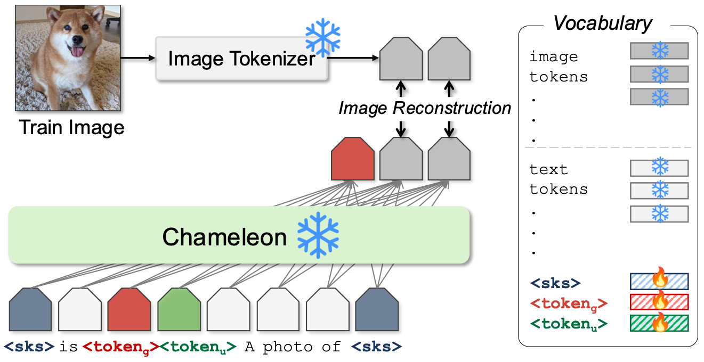

🦎 Yo'Chameleon 🦎
Personalized Vision and Language Generation
——— CVPR 2025 ———
🚩: equal advising
[Motivation]
Large Multimodal Models (e.g., GPT-4, Gemini, Chameleon) have evolved into powerful tools with millions of users. However, they remain generic models and lack personalized knowledge of specific user concepts. Previous work has explored personalization for text generation, yet it remains unclear how these methods can be adapted to new modalities, such as image generation.
In this paper, we introduce Yo'Chameleon, the first attempt to study personalization for Large Multimodal Models.
[Problem Statement]
Given 3-5 images of a particular concept, Yo'Chameleon leverages
(i) answer questions about the subject (personalized language generation)
and (ii) recreate pixel-level details to produce images of the subject in new contexts (personalized vision generation)
[Approach/ Results]
Yo'Chameleon is trained with:
(i)
and (ii)
Our qualitative and quantitative analyses reveal that Yo’Chameleon can learn concepts more efficiently using fewer tokens and effectively encode visual attributes, outperforming prompting baselines.
|  |
⚙️ Soft-prompt: We define a personalized soft-prompt for the subject as:
"
Where:
|
|
🌱 "Soft positive" images:
To overcome the limited number of training images (3-5 images), we propose to use “soft-positive” images with dynamic prompt length to enhance the image generation quality. |
🌱 Self-Prompting:
To balance the performance across the modality (language generation and image generation), we propose: (i) use two set of soft prompts and (ii) self-prompting optimization techniques. |
|
📊 Full-model Finetuning vs. Soft Prompt
In this experiment, our goal is to verify whether soft prompt tuning could achieve performance comparable to full- model fine-tuning, which is commonly used in personalized image generation. We collected photos for three concepts: one person (300 images), one dog (500 images), and one cat (500 images). Qualitative result (right) effectively demonstrates the advantages of soft prompt tuning over full-model fine-tuning: (1) it matches the performance of full-model fine-tuning in personalized tasks and (2) mitigates catastrophic forgetting. (Quantitative table can be found in Supplementary) |
|
|
📊 Unbalanced performance across modalities:
Optimized tokens for one task cannot effectively perform another, and simply training on a mixture of data yields suboptimal performance across tasks. |
📊 Limitations :
Our method is not without limitations. - 1st: when dealing with objects that have intricate details (e.g., text on a cup or characters on a keyboard). - 2nd: our method’s performance is constrained by the capabilities of the base model (i.e., multiple personalized concepts generation). - Lastly, there remains a significant gap for personalizing human faces. |
@article{yochameleon,
title={Yo'Chameleon: Personalized Vision and Language Generation},
author={Thao Nguyen and Krishna Kumar Singh and Jing Shi and Trung Bui and Yong Jae Lee and Yuheng Li},
journal={2025 IEEE/CVF Conference on Computer Vision and Pattern Recognition (CVPR)},
year={2025},
}
I would like to express my gratitude to my Adobe Research's mentors: Dr. Krishna, Dr. Jing Shi, and Dr. Trung Bui for their discussions. Special thanks to my advisor, Prof. Yong Jae Lee, who provided endless insights and guidance for this project (as always). A big shout-out to my primary fellow mentee Sicheng Mo—he taught me so much about coding. Without him, I’d still be using TensorBoard instead of WanDB! (Also, he has wonderful taste in food and restaurants.) Additionally, thanks to (technically-not) mentor Fangzhou Mu for hosting many Friday dinners and board game nights during the summer 🥓🍣🍱 (though, he’s not a fan of Thai foods —meh~). And finally, saving the best for last: I couldn’t have completed this project without the unwavering support (and pushes) of my main Adobe juan mentor, Dr. Yuheng Li :xixi:. Thank you so much!
This website is adapted from Nerfies, licensed under a Creative Commons Attribution-ShareAlike 4.0 International License.

{kind=link}